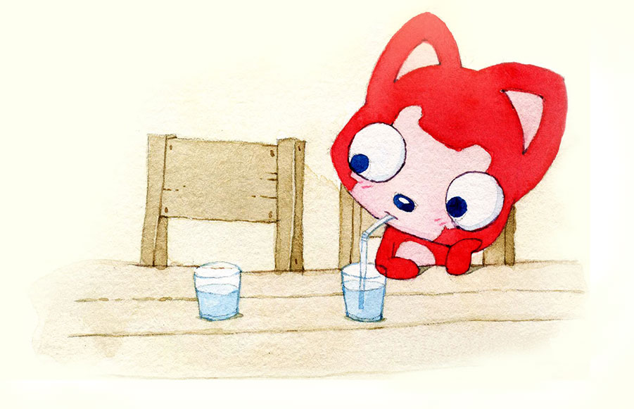

W伟 ❤ SZ月
🎈🎉🎈
请安键盘“↓”键 开始singer之旅
三里清风三里路，步步风力步步你
一个人的长廊

一个人的山岗

一个人的地铁

一个人的游乐场

但依然乐观，微笑着，等待着

生活难免有风风雨雨

总能够轻松的应对

并且面带阳光、自信的笑容

生活也不会总是一帆风顺

但他每次都能勇敢的面对
随时准备接受生活的挑战


可是兰涛的爱情又在哪里呢？
流光容易把人抛，红了樱桃，绿了芭蕉

只能问世间情为何物
大树告诉他，也许就在你的前方

于是，一个人继续向前走
走在茫茫的雪地上

直到有一天与你相遇

倾城一笑，也抵不过你眉间一点朱砂

情不知所起，一往情深，怎奈何


如花美眷，终不敌，似水流年

静水流深，沧笙踏歌
偷吃生活的蜜，风情万种与你

而我丰腴诗句，也都纷纷落笔

秋雨淅淅，晚风慢慢

从今开始
清酒和冷粥是你

凉风和路灯是你SZY

冷若冰霜是你

不谙世事是你

醉秋寒冬，我站在午夜的街口，四面八方都是你！

大概就是，
七月檐角的猫
误创了十一月初冬的窗

挠的心理痒痒
世人都称之为欢喜
你是我提笔不曾写下的诗句

如林间松风新雪初霁
后来物换星移
挑花是你
春风也是你

你是檐上三寸的雪

你是柳树垂下的骄傲


你是漫无边际中的星光
你是九月夏天滚烫的浪

你是忽而漂泼大雨的向往


你是无法言表的美丽
你是我乏味人生的执迷
你是我半醉半醒时的梦


曾经我自诩半个诗人
见山是深情伟岸
见海是热情澎湃

云海江湖，虫鸣鸟啼
都是暗藏情愫
唯独见你


山川沉静海面静谧 云不在翻涌 江湖不在澎湃 世界万籁俱静

如果要问这这世间，什么是最烈的酒 那肯定是你低头擒笑的温柔 那什么是世间最大的雨 肯定是你傲娇的眼神
春风十里扬州路
卷上珠帘总不如

身无彩凤双飞翼，心有灵犀一点通
春心莫共花挣发，一寸相思一寸灰

众里寻他千百度，蓦然回首，那你却在灯火阑珊处


浪漫不总是摘星揽月
也不是什么海誓山盟，海枯石烂
更不是什么轰轰烈烈，
而是平淡出奇，柴米油盐
愿得一人心，白首不相离


happy Christmas
I love you

坚持走下去
无论精彩、平淡都会是欢喜。
--ESC有惊喜